ข้อมูลเบื้องต้น
- ชื่อ–นามสกุล
- นายพัฒน์ปพงษ์ บุญประภาศรี
- วิชาเอก
- คณิตศาสตร์
- วุฒิการศึกษา
- ระดับปริญญาโท
- สถาบัน
- มหาวิทยาลัยราชภัฏมหาสารคาม
แฟ้มสะสมผลงานออนไลน์
ผู้สมัครสอบครูผู้ช่วย · วิชาเอกคณิตศาสตร์
“ก้าวแรกของความสำเร็จ คือ ความกล้าที่จะเผชิญหน้ากับความท้าทาย”
ABOUT ME
ข้าพเจ้ามุ่งมั่นนำความรู้ด้านคณิตศาสตร์มาประยุกต์ใช้ในการจัดการเรียนรู้ เพื่อช่วยให้ผู้เรียนเข้าใจแนวคิดอย่างเป็นระบบ กล้าคิด กล้าลอง และสามารถนำความรู้ไปใช้แก้ปัญหาในชีวิตจริงได้
INSPIRATION
“อาชีพครู ก็เหมือนนักสร้างสวน เพราะครูไม่ได้เพียงแค่ปลูกต้นไม้ แต่ครูต้องดูแลเมล็ดพันธุ์ทุกชนิดที่แตกต่างกัน ทั้งให้ปุ๋ย ให้น้ำ และคอยกำจัดวัชพืช เพื่อให้ต้นไม้แต่ละต้นเติบโตและแข็งแรงในแบบของตัวเอง จนสามารถออกดอกออกผลได้อย่างเต็มที่
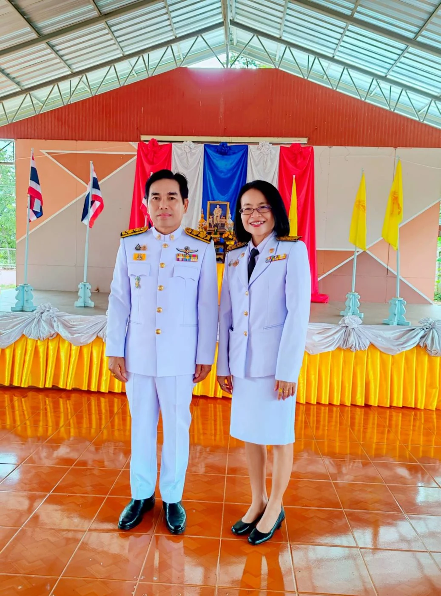
FAMILY INSPIRATION
บิดาและมารดาเป็นแบบอย่างสำคัญที่หล่อหลอมให้ข้าพเจ้ามีความรับผิดชอบ ความอดทน ความซื่อสัตย์ และเห็นคุณค่าของการศึกษา กำลังใจจากครอบครัวเป็นพลังสำคัญที่ทำให้ข้าพเจ้ามุ่งมั่นพัฒนาตนเอง และตั้งใจเดินบนเส้นทางวิชาชีพครูอย่างเต็มความสามารถ
EDUCATION
วิชาเอกคณิตศาสตรศึกษา คณะครุศาสตร์ มหาวิทยาลัยราชภัฏมหาสารคาม
วิชาเอกคณิตศาสตร์ คณะวิทยาศาสตร์ มหาวิทยาลัยมหาสารคาม
โรงเรียนภูเขียว อำเภอภูเขียว จังหวัดชัยภูมิ
โรงเรียนอนุบาลชุมแพ อำเภอชุมแพ จังหวัดขอนแก่น
LICENSES & QUALIFICATIONS
ใบอนุญาตประกอบวิชาชีพครูชั้นต้น กลุ่มวิชาเฉพาะ ออกโดยคุรุสภา มีผลตั้งแต่วันที่ 5 มกราคม 2569 ถึงวันที่ 4 มกราคม 2574
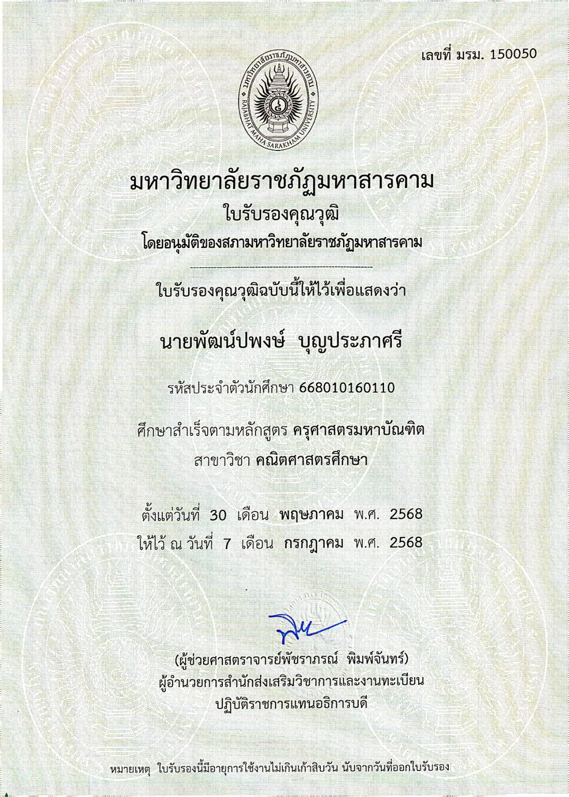
ครุศาสตรมหาบัณฑิต สาขาวิชาคณิตศาสตรศึกษา มหาวิทยาลัยราชภัฏมหาสารคาม
เปิดดูเอกสาร →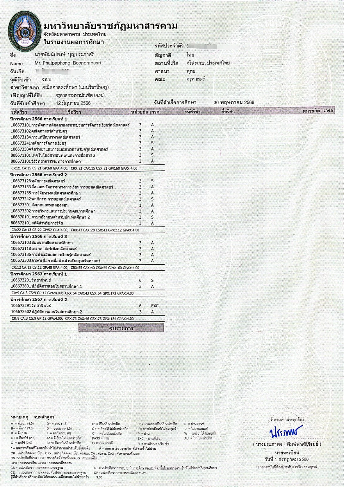
หลักฐานผลการศึกษาระดับครุศาสตรมหาบัณฑิต สาขาวิชาคณิตศาสตรศึกษา
เปิดดูเอกสาร →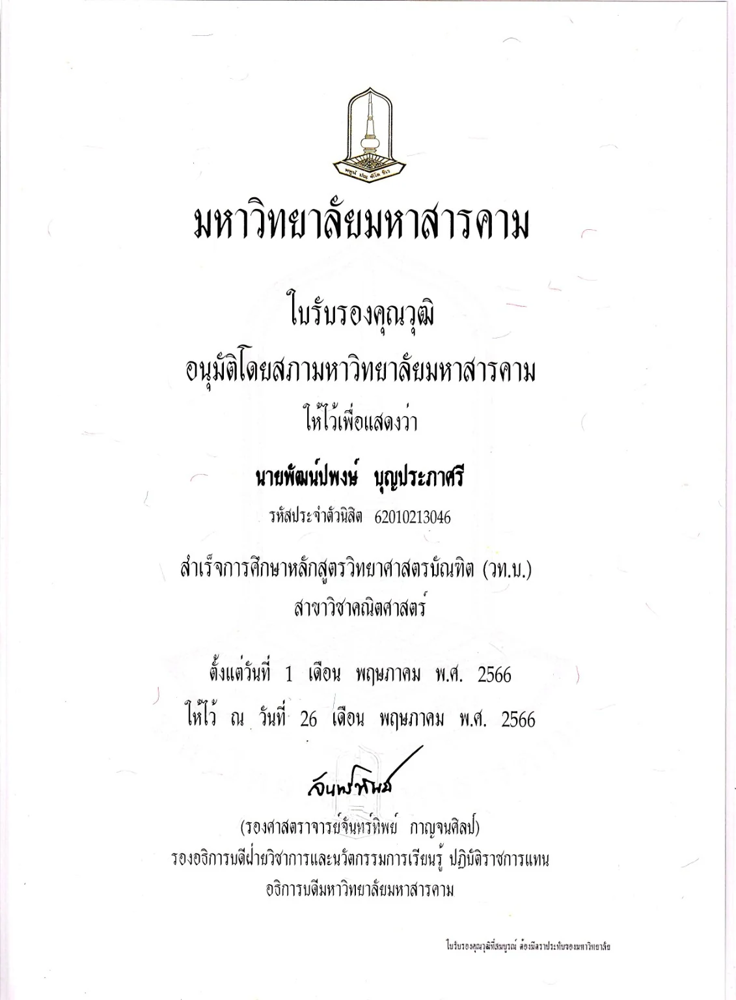
วิทยาศาสตรบัณฑิต สาขาวิชาคณิตศาสตร์ มหาวิทยาลัยมหาสารคาม
เปิดดูเอกสาร →หลักฐานผลการศึกษาระดับวิทยาศาสตรบัณฑิต สาขาวิชาคณิตศาสตร์ โดยแสดงครบทั้ง 2 หน้า
ผ่านการฝึกอบรมผู้กำกับลูกเสือสามัญรุ่นใหญ่ ขั้นความรู้เบื้องต้น และผู้กำกับลูกเสือ ขั้นความรู้ทั่วไป ในปี พ.ศ. 2566
หมายเหตุ: เอกสารในส่วนนี้ใช้ฉบับที่ปกปิดข้อมูลส่วนบุคคลสำคัญแล้ว เพื่อความเหมาะสมในการเผยแพร่บนเว็บไซต์สาธารณะ
TEACHING EXPERIENCE
อำเภอเมืองมหาสารคาม จังหวัดมหาสารคาม
CLASSROOM RESEARCH
ศึกษาผลที่เกิดขึ้นต่อผลสัมฤทธิ์ทางการเรียนคณิตศาสตร์ เจตคติต่อวิชาคณิตศาสตร์ และความวิตกกังวลต่อวิชาคณิตศาสตร์ของนักเรียนชั้นมัธยมศึกษาปีที่ 4
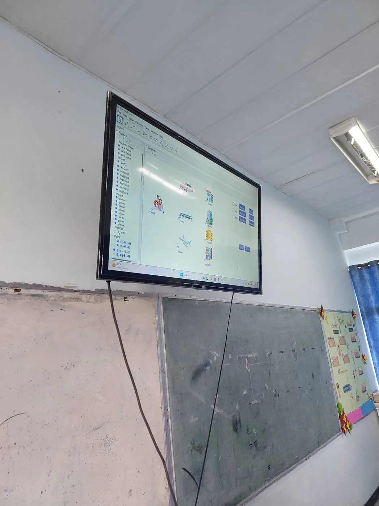
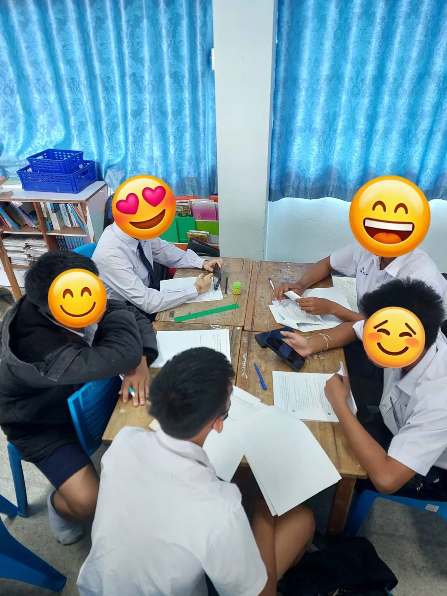
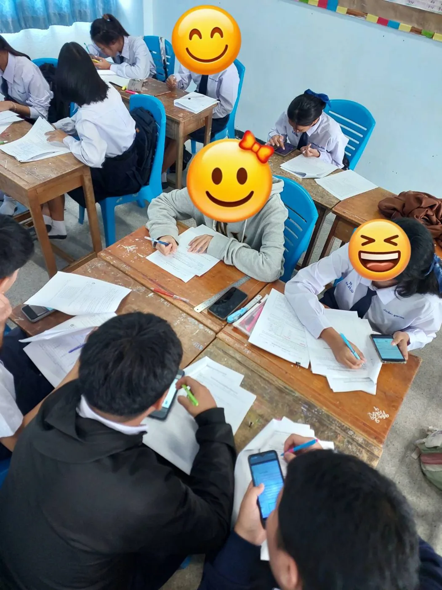
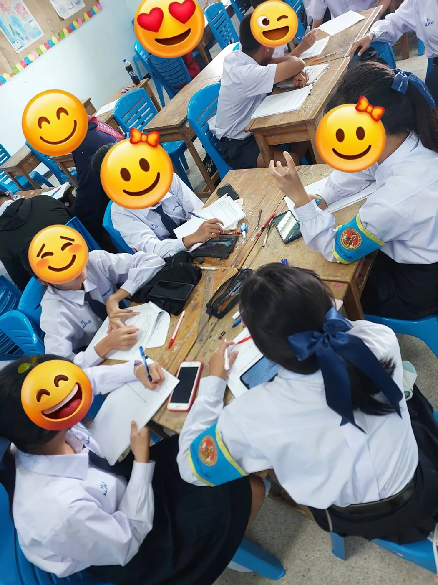
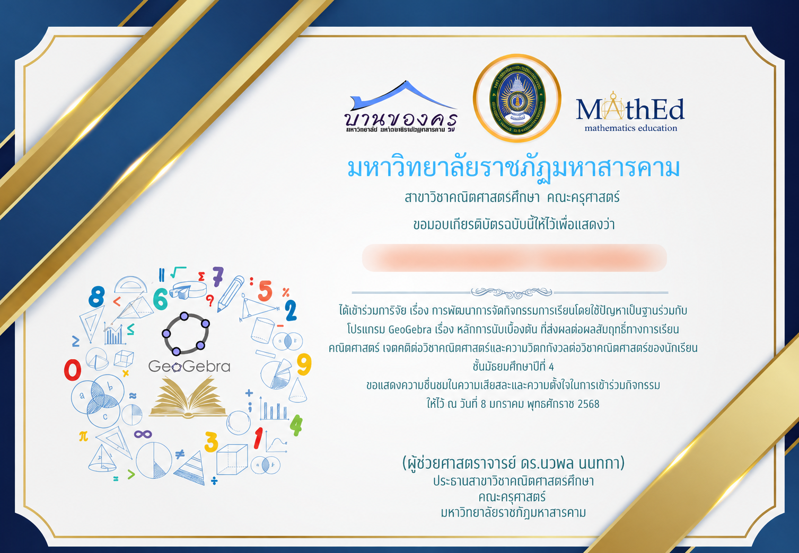
นักเรียนชั้นมัธยมศึกษาปีที่ 4/1 ภาคเรียนที่ 2 ปีการศึกษา 2567 จำนวน 39 คน ได้มาจากการสุ่มแบบกลุ่ม (Cluster Random Sampling)
ทำหน้าที่เป็นผู้อำนวยการเรียนรู้ สนทนาเชื่อมโยงผู้เรียนเข้าสู่ปัญหา นำเสนอสถานการณ์ที่สอดคล้องกับความสนใจของนักเรียน และใช้ GeoGebra สนับสนุนการเรียนรู้ระหว่างกิจกรรมกลุ่ม
ผลสัมฤทธิ์และเจตคติสูงกว่าเกณฑ์ร้อยละ 70 อย่างมีนัยสำคัญทางสถิติที่ระดับ .05 เจตคติมีแนวโน้มพัฒนาเพิ่มขึ้นอย่างต่อเนื่อง และความวิตกกังวลต่อวิชาคณิตศาสตร์ลดลงอย่างชัดเจน
SKILLS & ABILITIES
DIGITAL SKILLS
PEOPLE SKILLS
EMOTIONAL SKILLS
TEAMWORK SKILLS
SOCIAL SKILLS
SELECTED CERTIFICATES
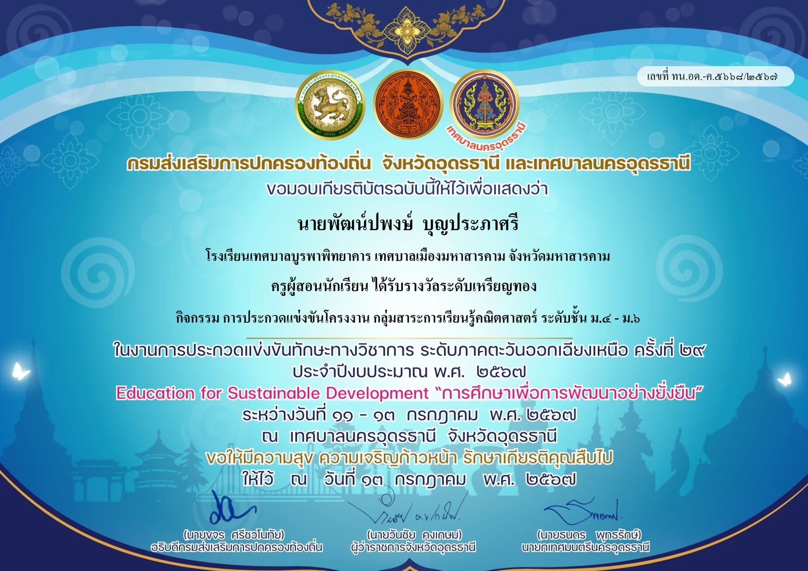
ครูผู้สอนนักเรียนในการประกวดแข่งขันทักษะทางวิชาการ ครั้งที่ 29 ณ เทศบาลนครอุดรธานี
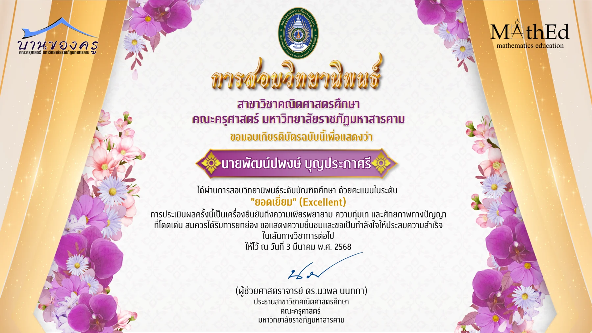
ผ่านการสอบวิทยานิพนธ์ระดับบัณฑิตศึกษาด้วยผลประเมินระดับยอดเยี่ยม (Excellent)
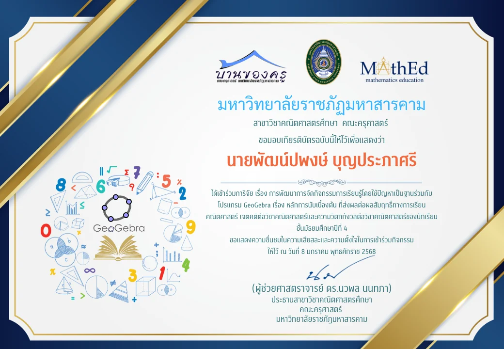
การพัฒนากิจกรรมการเรียนรู้เรื่องหลักการนับเบื้องต้นสำหรับนักเรียนชั้นมัธยมศึกษาปีที่ 4
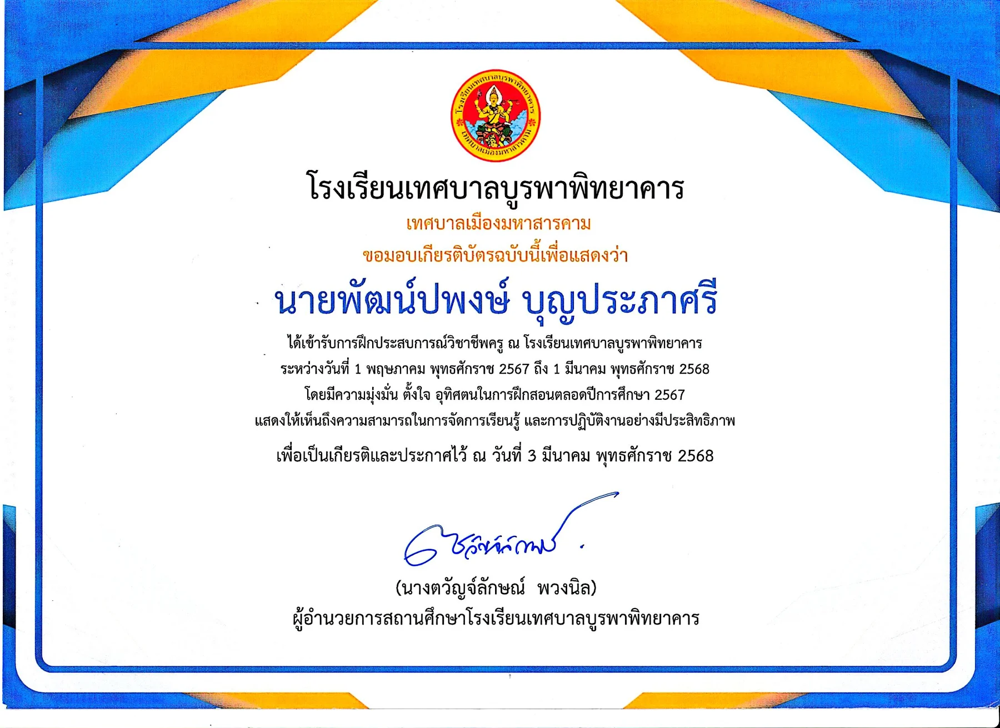
ได้รับการรับรองความมุ่งมั่น ความสามารถในการจัดการเรียนรู้ และการปฏิบัติงานอย่างมีประสิทธิภาพ
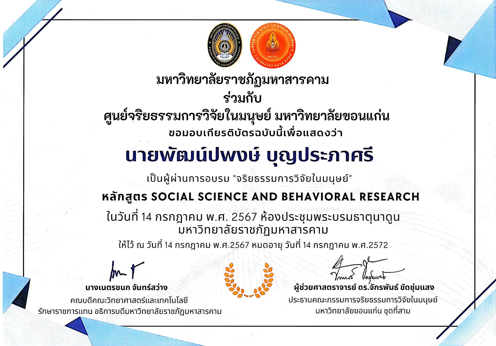
ผ่านการอบรมหลักสูตร Social Science and Behavioral Research ร่วมกับมหาวิทยาลัยขอนแก่น
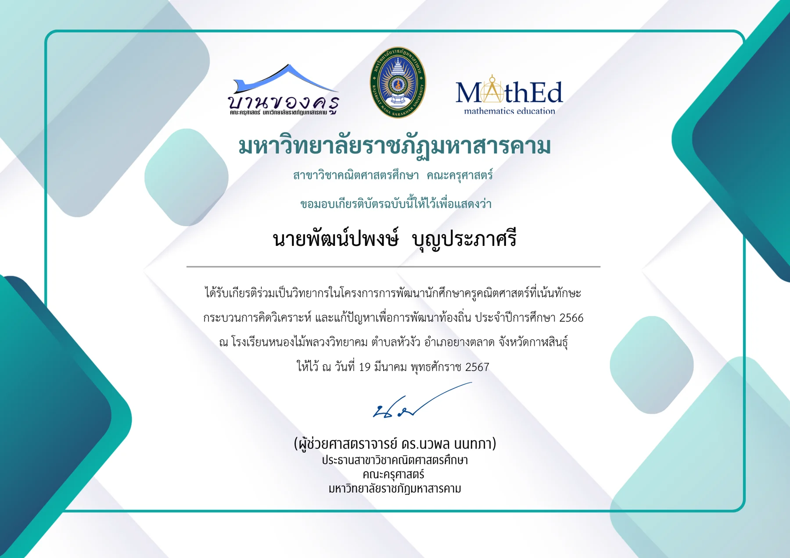
ร่วมเป็นวิทยากรโครงการพัฒนานักศึกษาครูคณิตศาสตร์ที่เน้นการคิดวิเคราะห์และการแก้ปัญหาเพื่อท้องถิ่น
FULL ARCHIVE
การใช้ Blooket เพื่อส่งเสริมการเรียนรู้
เทคโนโลยีดิจิทัลเพื่อการศึกษา
การใช้ Mentimeter ในชั้นเรียน
ความปลอดภัยทางไซเบอร์สำหรับครู
การประยุกต์ใช้ GrokAI เพื่อการศึกษา
AI และระบบบริหารจัดการเรียนรู้
การออกแบบสื่อด้วย Canva Education
กิจกรรมนิสิตและการพัฒนาตนเอง
การทำงานร่วมกับผู้อื่นและกิจกรรมนิสิต
กิจกรรมส่งเสริมทักษะทางคณิตศาสตร์
กิจกรรมส่งเสริมทักษะทางคณิตศาสตร์
การนำเสนอผลงานทางวิชาการ
การมีส่วนร่วมในกิจกรรมส่งเสริมเยาวชน
การพัฒนาการจัดการเรียนรู้เชิงรุก 2567
เทคโนโลยีเพื่อการเรียนรู้คณิตศาสตร์
ชุมชนแห่งการเรียนรู้ทางวิชาชีพ
การเรียนรู้ผ่านการปฏิบัติงาน
การพัฒนาความรู้ด้านวิจัยและวิชาการ
มาตรฐานและจริยธรรมการดำเนินงานวิจัย
การส่งเสริมศักยภาพผู้เรียนด้านคณิตศาสตร์ 2567
คอลลาจผลงานด้านการออกแบบสื่อและทักษะดิจิทัล
SELECTED WORKS
พื้นที่สำหรับนำเสนอแผนการสอนที่โดดเด่น พร้อมเป้าหมาย วิธีดำเนินงาน และผลลัพธ์
เปิดดูแผนการเรียนรู้ →พื้นที่สำหรับสื่อการสอน เกม กิจกรรม หรือเครื่องมือดิจิทัลที่ช่วยพัฒนาการเรียนรู้
เพิ่มหลักฐานภายหลัง →พื้นที่สำหรับงานวิจัยในชั้นเรียน โครงการพัฒนาผู้เรียน หรือกิจกรรมเพื่อชุมชน
ดูรายละเอียดงานวิจัย →TEACHER VISION
ข้าพเจ้าเชื่อว่าผู้เรียนทุกคนสามารถพัฒนาได้ เมื่อได้รับโอกาส การดูแลที่เหมาะสม และการจัดการเรียนรู้ที่สอดคล้องกับความแตกต่างระหว่างบุคคล ครูจึงไม่ใช่เพียงผู้ถ่ายทอดความรู้ แต่เป็นผู้สร้างแรงบันดาลใจ และส่งเสริมให้ผู้เรียนกล้าเผชิญกับความท้าทายอย่างมั่นใจ
CONTACT
ผู้สมัครสอบครูผู้ช่วย · วิชาเอกคณิตศาสตร์